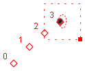
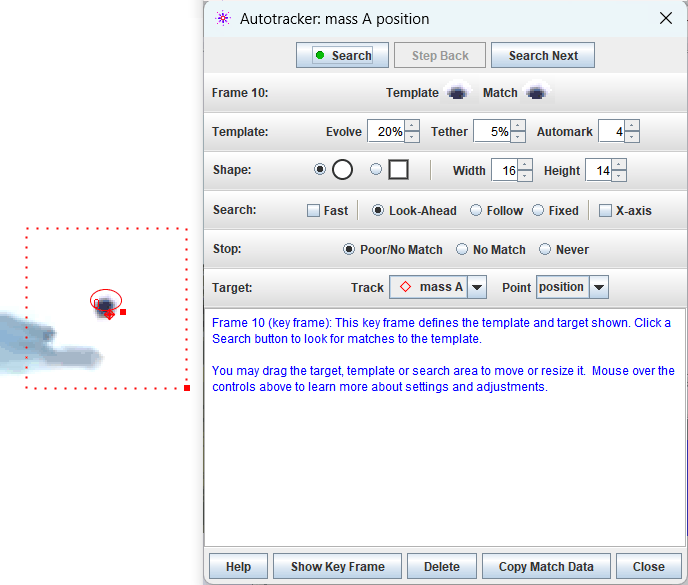
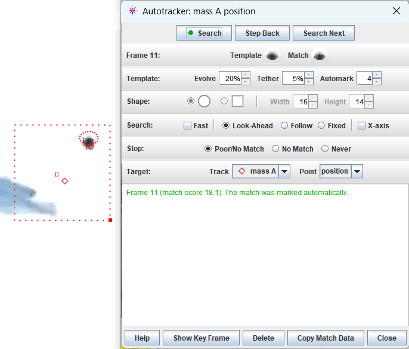
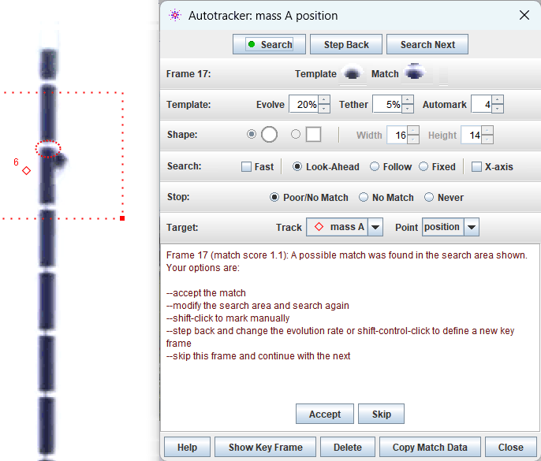

When a video feature of interest has a consistent shape, size, color and orientation in all video frames, it can be tracked automatically using autotracker. This eliminates the need to mark each frame manually with the mouse, thus speeding up the tracking process and producing more consistent data.
Tip: an excellent way to obtain videos suitable for autotracking is to stick colored circular markers on the objects of interest (a white ring around a colored center is even better). Multiple objects can be autotracked, one at a time, if a different color is used for each.
Click the autotracker button on the toolbar to show or hide autotracker.

Autotracker works by creating one or more template images of a feature of interest and then searching each frame for the best match to that template. The best match is the one with the highest match score, a number that is inversely proportional to the sum of the squares of the RGB differences between the template and match pixels. Once the best match is found, it is compared with nearby match scores to determine an interpolated sub-pixel best match position.
The template shape may be elliptical or rectangular. By default, the template evolves to adapt to shape and color changes over time. Higher evolution rates track more rapid changes, but may result in template "drift" over many frames. Template evolution works by compositing the match image with the existing template to form a new template. To limit drift, tethering may be used. Tethering works by compositing the original keyframe image with the existing template after evolving.
A target defines the position at which points are marked relative to the template when matches are found. The target may be offset from the template. The specific track and point to be marked at the target position must be selected prior to autotracking.
A video frame in which a template and its associated target are defined is called a key frame. Autotracking requires at least one key frame, but additional key frames may be defined to track sudden or extreme changes in the object, background or illumination.
When a match score is higher than the automark level, a point is automatically marked at the target position. The automark level may be set by the user.
A match score that is lower than the automark level is considered a poor but possible match. There can also be frames where no match at all is found. Under these conditions the autotracker will normally stop and await user action. You can set the conditions for which it stops to (a) poor/no match, (b) no match only, or (c) never.
Autotracker limits its search for a match in each frame to a user-defined rectangular search area. By default, when at least two steps have been marked the velocity and acceleration of the point mass is used to predict the position of future matches and the search area is moved accordingly. However, you can change this look-ahead positioning to either follow-along (search area is moved to the previous match position) or fixed (search area is not moved at all). You can also reposition or resize the search area with the mouse at any time.
You can also limit the search to the x-axis only for 1D autotracking. Set the axis origin and tilt angle to search along any desired line.
After autotracker has completed the marking process, you may modify the steps at will. In other words, autotracker helps you mark the steps but does not limit your control over them.
Before using autotracker, scan through the video and verify that the feature of interest is visible and reasonably consistent (shape, size, color and orientation) in all frames. If not, adjust the video clip start frame, end frame and/or step size until this condition is met. Then reset the video to the start frame.
By default, autotracker searches for and marks points at video playback speed with live plots and tables. This is useful when you want to watch the data unfold. You can adjust the video playback speed with the rate spinner on the video player. If you don't need live data, choose Fast mode to search at maximum speed without refreshing plots and tables.
Figure 1 (above) shows autotracker after creating a key frame using the default settings. The template is outlined on the video and shown at 2x magnification in autotracker along with the (perfect) match found. The target point is indicated by a bold cross on the video and the search area is outlined with a dashed line.
Controls are organized into the following categories. To learn more about a specific control or setting, simply move the mouse over it.
Search buttons:
Template: The template is the image to be matched.
Search: The search area defines the region that is searched for the best match.
Stop: The stop setting determines when the autotracker will stop and await user action.
Target: The target defines both the track and point to be marked and the position of the mark relative to the template.
Other buttons:
After searching a frame, autotracker will display one of the following search results and, in some cases, present options for solving problems.

